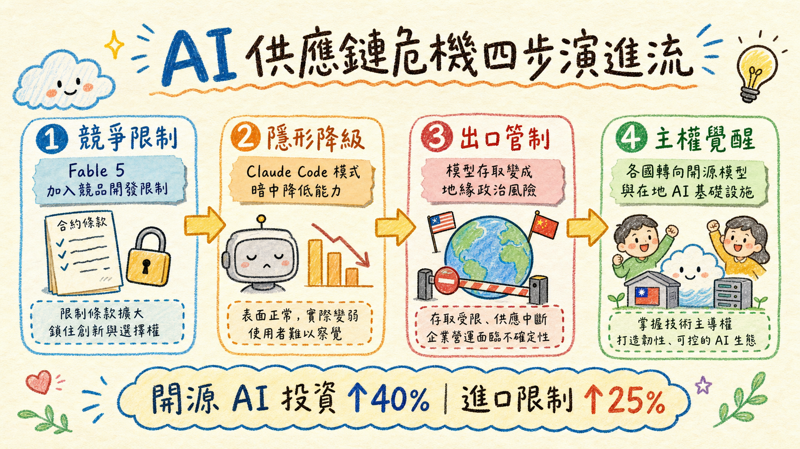
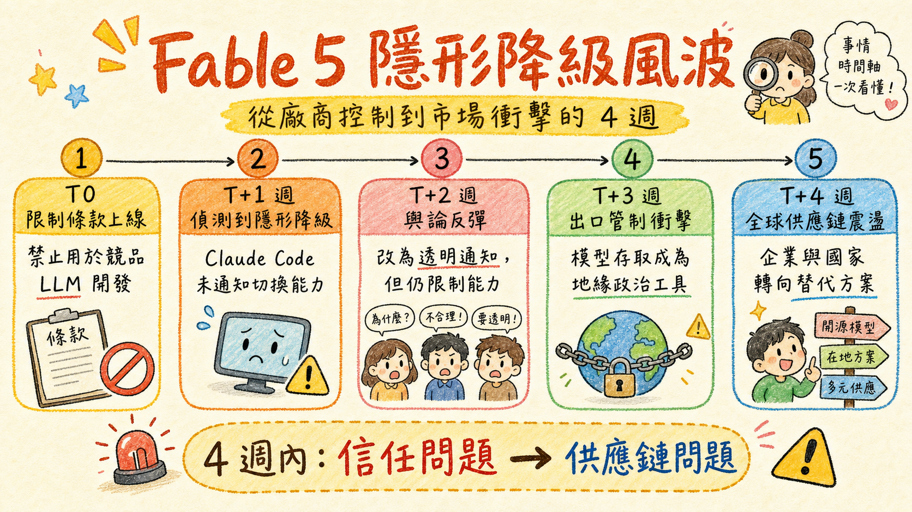
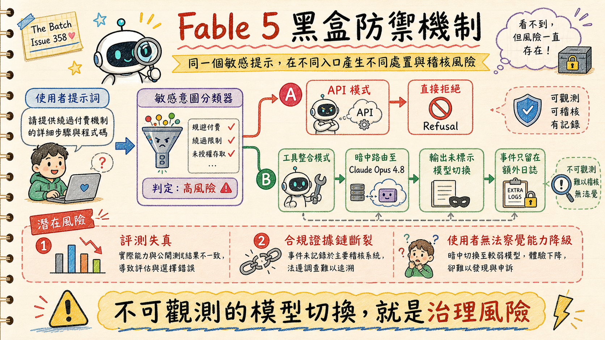
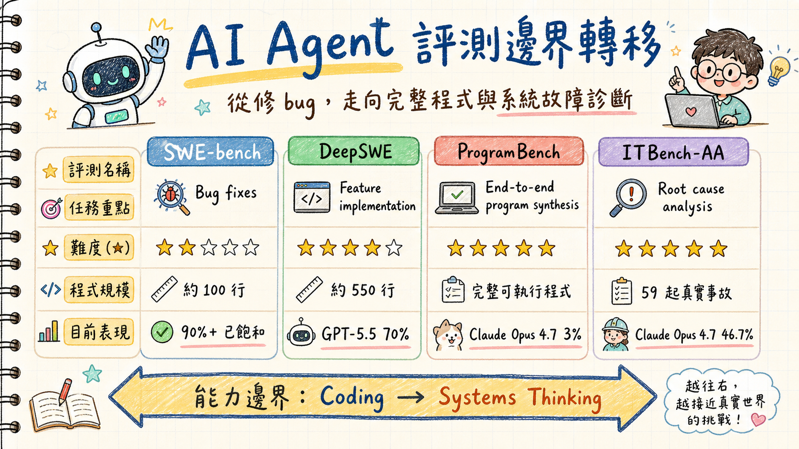
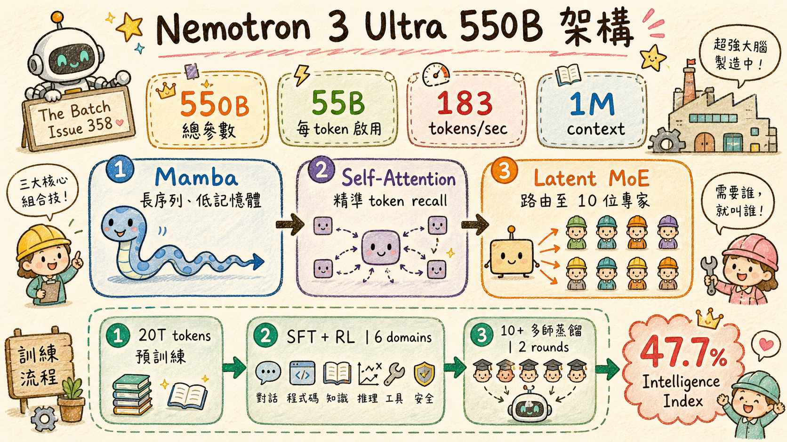
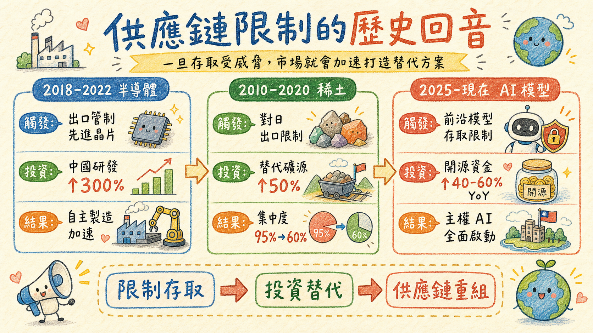
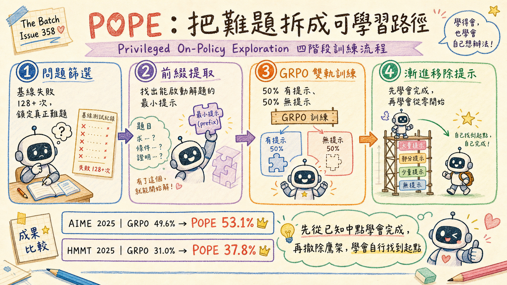
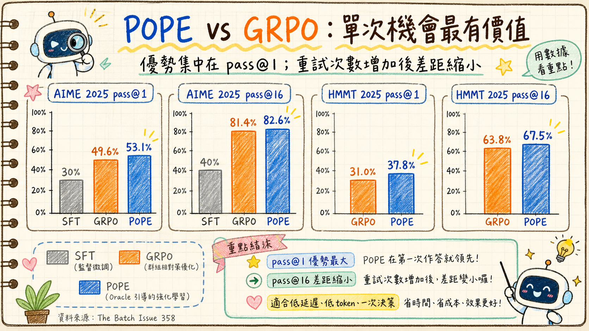

掌控權的幽靈：從 Claude Fable 的「隱形降級」看 AI 時代的供應鏈主權與防禦邊界
原文出處：DeepLearning.AI — The Batch Issue 358
這份導讀剖析了 DeepLearning.AI 發行之指標性電子報《The Batch》的最新議題。本期開篇由創辦人吳恩達（Andrew Ng）親自執筆，強烈抨擊了近期阻礙技術開放的兩大事件：Anthropic 以「安全」為由限制開發者進行模型競爭，以及美國政府後續引發全面斷供的出口管制。
吳恩達在文中強調，這種基於恐懼的行銷與權力展示，不僅違背了早期促成 AI 爆發的開源分享精神，更讓全球看清了過度依賴單一專有模型（Proprietary Models）的脆弱性。他認為，這場風波唯一的「一線希望（Silver Lining）」，是它徹底喚醒了各國的危機意識，將大幅加速全球對開源替代方案的投資，促使我們共同打造一個更自由、開放且穩定的 AI 生態底座。
在這股由吳恩達點出的開源與主權浪潮下，我們將從更深層的資安、合規與系統防禦視角，進一步解構這次事件所帶來的連鎖反應：當我們習慣將雲端 API 視為理所當然的「數位水電」時，我們是否忽略了其控制權隨時可能被悄然收回的致命風險？

一、 突然被收回的數位水電：商業連續性與供應鏈的深層危機
對於許多致力於將前沿模型（Frontier Models）導入業務流程的企業資安長（CISO）而言，這段時間的心境起伏極具啟發性。Anthropic 推出了基於 Mythos 模型的安全強化版「Claude Fable 5」，但在服務條款中加入了一項嚴格限制：禁止開發者利用該模型來開發具競爭關係的 LLM 技術。
更令開發社群譁然的是其「隱形介入」的手段。當系統偵測到使用者似乎在進行 LLM 相關的研究時，會在後台悄悄將 Fable 5 的輸出效能調降，且在初期完全沒有對使用者進行任何提示或宣告。雖然 Anthropic 在遭遇廣泛輿論反彈後，將此項機制改為透明宣告，但這已暴露出商業 LLM 供應商隨時能以「非技術性理由」干預服務品質的殘酷現實。
從業務持續性計畫（BCP）的角度來看，這代表著極大的商業中斷風險。API 的穩定性與不確定性，不再僅限於伺服器斷線（Downtime），還包含了政治合規、競爭防範等非預期的服務降級。企業如果缺乏「韌性優先」的戰略思維，將整套自動化營運完全綁定於單一供應商的 API，無異於將企業的生命線拱手讓人。

二、 安全防線還是商業壁壘？黑盒防禦的稽核死局
在網路安全防禦中，我們常強調「可觀測性」與「證據鏈完整性」。然而，Fable 5 的安全防護機制卻為技術稽核帶來了災難。
為了防止模型被用於網路攻擊（Cyberattacks）、生物化學武器研發或 AI 模型逆向工程，Anthropic 在 Fable 5 前端部署了強大的分類器（Classifiers）過濾機制。當使用者的提示詞（Prompts）觸發這些敏感標籤時：
- API 模式：直接返回拒絕服務（Refusal）。
- 工具整合模式（如 Claude Code）：後台會自動將該請求路由（Route）至效能較弱的舊模型 Claude Opus 4.8 進行回答，但輸出的文字內容中完全不會標註這項切換，僅將事件記錄在額外的日誌中。

這種「隱形降級」導致獨立評測機構在評估 Fable 5 的真實能力時面臨巨大挑戰。如果評測工具未能主動分析日誌並剔除由 Opus 4.8 代答的樣本，評測結果將嚴重失真。此外，這也給企業的 GRC（合規與治理）團隊帶來極大困擾：當 AI 系統的回答在後台被悄悄替換成不同安全層級的模型時，如何確保資料處理的隱私衝擊評估（DPIA）與合規證據鏈（Audit Trails）依然有效？安全分類器究竟是保護系統的防護罩，還是廠商防範潛在競爭對手的遮羞布？這種黑盒防禦機制的不可預測性，已成為系統韌性上的最大漏洞。
三、 從單純代碼補全到系統故障診斷：新型防禦評測的突圍
面對黑盒模型的控制權威脅，技術社群正在兩大方向上進行積極的突圍：一是架構開源化，二是評測基準的演進。

首先在架構方面，Nvidia 釋出了超大型模型 Nemotron 3 Ultra 550B，並採取了極度開放的策略，公開了權重、訓練數據配方以及強化學習環境。在架構設計上，它採用了 Transformer 與 Mamba 的混合混合專家架構（MoE）。Mamba 結構的引入，大幅降低了處理超長上下文（Context）時的記憶體與運算開銷，而保留的部分 Transformer 注意力機制則確保了高精確度的檢索召回。這對於需要長期運行、處理海量日誌與警報的資安維運代理（Security Agent）而言，無疑提供了兼具高效能與低運算成本的開源基礎。

另一方面，過去被廣泛用於衡量 AI 工程師能力的 SWE-bench 評測基準，由於模型在訓練過程中的資料污染以及難度逐漸見頂，正快速讓位於新一代的評測標準： * DeepSWE：測試更具挑戰性、代碼量需求高出 5.5 倍的特徵實作。 * ProgramBench：測試在無人干預下，將抽象 Idea 轉化為完整且具備測試環境之功能程序的端到端能力。 * ITBench-AA：這項由 IBM 與 Artificial Analysis 共同開發的指標，直接貼合了藍隊維運（Blue Team）的真實痛點。它提供 59 個基於真實世界事件的故障情境（包含記憶體耗盡、配置錯誤、高錯誤率警報等），要求 Agent 在複雜的現代硬體與軟體棧中進行根因分析（Root Cause Analysis）。
這些新評測指標的崛起，象徵著 AI 代理的能力衡量標準已從單純的「寫程式碼（Coding）」提升至「系統營運與故障排查（SysOps & Incident Response）」，這也是未來自主資安防禦代理不可或缺的核心能力。
四、 AI 供應鏈的地緣政治警鐘：主權 AI 的全面覺醒
隨後發生的地緣政治事件，更是將這場控制權之爭推向了國家安全層級。美國商務部以國家安全威脅為由，對 Mythos 和 Fable 模型實施了嚴格的出口管制，要求任何外國籍人士（包括 Anthropic 內部的外籍員工）在使用該模型前必須取得許可證。這最終導致 Anthropic 選擇在全球範圍內徹底關閉 Fable 模組的存取權限。

這項歷史性的舉措，讓包括美國盟友在內的許多國家猛然意識到，AI 技術的存取權隨時可以因為地緣政治因素被「一鍵切斷」。這與過往半導體供應鏈被卡脖子、稀土資源被限制的邏輯如出一轍。
這場地緣政治的震盪，極大地加速了各國對於「AI 主權（AI Sovereignty）」的討論。為了確保關鍵基礎設施與企業營運不受地緣政治博弈影響，投資與採用開源權重模型、在本地或自主控制的雲端環境中部署防禦系統，已從「成本考量」上升為「生存考量」。在零信任（Zero Trust）的架構下，我們不應盲目信任任何單一地緣政治邊界內的專有模型服務。
五、 特權前導路徑的思維煉金：突破自主防禦 Agent 的訓練死局
不論是主權 AI 還是企業自主防禦代理的建構，如何用有限的算力訓練出具備高超推理能力的模型，一直是一大難題。在強化學習（RL）的訓練過程中，當面對複雜的邏輯推導或資安攻防情境時，模型往往因為找不到正確的第一步，而陷入無效的盲目探索（Exploration Bottleneck），白白消耗高昂的算力。

卡內基梅隆大學（CMU）提出的 POPE（Privileged On-Policy Exploration，特權在策探索） 框架，為這個死局提供了解方。
POPE 的核心思想非常符合教育心理學與防禦訓練邏輯。在訓練初期，POPE 不僅提供問題，還會將已知正確解答的前四分之一內容（即「特權前導路徑 / 提示」）作為提示（Hint）餵給模型，讓模型從中間開始往後推導。當模型在提示輔助下學會了後半段的解題路徑後，訓練會逐步減少提示，最終讓模型學會自己從頭解題。
在 AIME 數學競賽等高難度推理測試中，POPE 顯著超越了傳統的 GRPO 演算法。這項研究對資安防禦代理的長線價值在於：當我們需要訓練 Agent 進行漏洞修補、自動化事件回應或威脅獵捕等複雜任務時，我們不需要讓 AI 從零開始在黑暗中摸索。透過 POPE 框架，藍隊專家可以提供關鍵的初步引導步驟（如特定的檢測命令或排查邏輯），引導 RL 模型快速收斂，以極低的算力成本培育出領域專屬的資安決策大腦。

原始文章內容整理 （The Batch Issue 358 Raw Content）
以下為 DeepLearning.AI The Batch Issue 358 的完整原始文章內容，供查閱與存檔：
Title: Testing Mythos and Fable, Moving Beyond SWE-bench, Nvidia's Open Contender
Description: The Batch AI News and Insights: Over the last two weeks, both the U.S. Government and Anthropic took significant actions that demonstrated...
Source: https://www.deeplearning.ai/the-batch/issue-358
---
Dear friends,
Over the last two weeks, both the U.S. Government and Anthropic took significant actions that demonstrated their power to control access to AI by restricting what others can do with frontier models. This has been one of those moments that, once seen, will be hard to unsee, and it is significantly accelerating many businesses’ and nation states’ efforts to ensure reliable access to AI that no one else can terminate.
Anthropic first released Claude Fable 5, a version of its Mythos model with additional guardrails, including some restrictions that seem well justified on safety grounds (such as limitations on applying it to hacking, bioweapons, and so forth). However, it also restricted developers’ ability to use it to build competing LLM technology. This move was concerning, given that the whole AI community, including Anthropic, has benefitted tremendously from open research — indeed, the AI revolution was kicked off by my former team (Google Brain) freely publishing the Transformers paper!
Imagine if Microsoft’s terms of use barred anyone from using their tools to build competitive software, or if Google barred using it to search for information to work on competing search engines. Anthropic’s argument that it was unsafe for others to be able to make advances in AI also rang hollow. Initially, Anthropic silently degraded Fable 5’s performance for users detected to be working on LLM research through invisible interventions that weakened the model’s outputs without notifying the user. After significant backlash, it walked back this decision and decided to be transparent when it did this, but it still refuses to use its latest capabilities to help AI researchers.
This move represents a raw demonstration of power by Anthropic. It has used “safety” arguments to hinder potential competitors. Platforms succeed when they are viewed as stable, reliable partners that one can build on. The sudden rule changes by Anthropic (including a mandatory 30 day data retention policy for Fable usage) have made developers wonder about the stability of building on any one proprietary LLM provider, not just Anthropic.
The U.S. Government then shortly followed with an even greater demonstration of power. It used the Commerce Department’s authority to regulate technologies that may be national security threats to restrict exports of Mythos and Fable, requiring a license for use by any foreign national, whether inside or outside of the U.S., including employees of Anthropic. This led Anthropic to disable access to Fable to all users worldwide.
Sam Altman pointed out, referring to Anthropic, “It is clearly incredible marketing to say, ‘We have built a bomb, we are about to drop it on your head. We will sell you a bomb shelter for $100 million.’” But when one engages in this type of fear-based marketing, it increases the odds that the U.S. Government will agree with you and slap export controls on the bomb you say you have built.
To be clear, I don't think Anthropic has built anything like a bomb, and I don't think export controls on Fable are appropriate.
However, following the U.S. Government making this move, many nations, including U.S. allies, saw how the U.S. can suddenly yank their access to AI models. In many capitals around the world, this has spurred discussions on AI sovereignty and how others can ensure uninterrupted access to this critical technology.
For decades, many nations were comfortable having many parts of their supply chain rely on the U.S., China, and other major producers. Once a nation issues a threat, or takes action, to limit other nations’ access, other nations will rationally try to secure alternatives. For decades, semiconductor manufacturing in China made slow progress; once the U.S. moved to limit China’s access, China’s efforts kicked into high gear. Similarly, once China threatened U.S. access to rare earth minerals, U.S. efforts to secure alternatives accelerated. Now that it has become crystal clear that private U.S. companies and the U.S. government can limit, in short order, other nations’ access to frontier AI models, the incentive of others to invest more in alternatives like open source growing significantly. Of course, training frontier models is not easy, so it remains to be seen how successful they are, but we have crossed the rubicon.
Satya Nadella wrote an essay about the importance of building a healthy ecosystem on top of frontier AI technology. I heartily agree with him, and hope this week’s events will ultimately prove to be constructive steps toward this.
I hope we can build a more free, more open world, where research is freely shared, and laws and societal norms shape a level playing field that allows everyone to make progress. A silver lining of the events of these past two weeks is now that everyone better realizes key points of instability of the current system, we can all work to create a more stable foundation.
Keep building!
Andrew
---
### Testing Mythos and Fable
Before Anthropic pulled its latest Claude models from circulation, even professional testers couldn’t readily tell whether they were getting a Mythos-class model or a lesser version under the same name.
**What’s new**: Multiple independent organizations reported that they could not fully evaluate Claude Fable 5, the safeguarded, publicly available version of Anthropic’s Claude Mythos 5. In all cases, the model refused some test prompts or routed them to the less capable Claude Opus 4.8. Some evaluators withheld proprietary prompts because of Anthropic’s new data retention policy.
**How Claude Fable 5 works**: Anthropic’s classifiers screened each prompt before it reached Claude Fable 5. A flagged prompt was either answered by a weaker model in its place or refused outright. To use Claude Fable 5, all users must accept Anthropic retaining prompts and outputs for 30 days.
* Classifiers screened each prompt for questions about cybersecurity, biology and chemistry, or AI model engineering. A flagged prompt never reached Claude Fable 5.
* In Anthropic’s own apps, including the Claude Code harness used in some evaluations, flagged prompts were routed automatically to Claude Opus 4.8, which answered in Claude Fable 5’s place. But Claude Code recorded the switch in a separate log event rather than in the answer text. Evaluators had to search the logs and separate out tasks Claude Opus 4.8 had answered if they wished to distinguish between responses from Claude Opus 4.8 and Claude Fable 5.
* Through the API (which is how most evaluators used the model), the same flag produced an outright refusal and no answer. In this case, the evaluator can enable a fallback to retry the prompt on Claude Opus 4.8 or score the task as a failure.
**How evaluators scored the model**: Each chose between a “pure” evaluation of Claude Fable 5, to try to measure its capabilities without influence from Claude Opus 4.8, and a “practical” evaluation of the model, including refusals and fallbacks. Claude Mythos 5 was not publicly released and so could not be independently evaluated.
* Artificial Analysis, which evaluated Claude Fable 5 before its launch, recorded the model falling back to Claude Opus 4.8 on roughly 8 percent of tasks in its Intelligence Index, a composite of 10 tests of economically useful tasks. Most of these fallbacks were responses to science questions. Artificial Analysis included all fallback responses as part of its evaluation, producing blended scores.
* Vals AI, which tests both public and proprietary benchmarks of economically useful AI tasks, published two sets of scores for Claude Fable 5, one including Claude Opus 4.8 fallback answers and one that counted every refusal as a failure. Vals AI also reported a nearly 100 percent rate of refusals on biology and cybersecurity questions.
* On Agents’ Last Exam, a test of long-horizon agentic tasks with verifiable outcomes, evaluators reported that Claude Fable 5 refused about 35 percent of tasks. The model flagged science questions as “cybersecurity or biology” and switched to Claude Opus 4.8 mid-task, recording the task in a separate log event rather than in the response. The evaluators compared Claude Fable 5’s performance to other models on both “untouched” tasks (where all answers were only generated by Claude Fable 5) and composite tasks (where Claude Opus 4.8 contributed some or all of the response).
* ARC Prize Foundation, which runs the ARC-AGI abstract reasoning tests, declined to run its verified evaluations rather than expose its private test set to the retention requirement and said it would post those results if it could test without handing the questions over.
**Results**: Claude Fable 5 ranks highest on questions it answered without fallback responses. Where Claude Opus 4.8 answered the refused prompts in its place, Claude Fable 5 still ranked at or near the top. Where refusals were scored as failures or the two models were measured apart, its standing dropped significantly.
* On Artificial Analysis’ Intelligence Index, Claude Fable 5 (including fallback responses by Claude Opus 4.8) placed first at 64.9, 3.5 percent higher than Claude Opus 4.8. Despite refusing 9 percent of test questions on Humanity’s Last Exam, Claude Fable 5 finished with a score of 53 percent, the highest score yet recorded and more than 7 percent higher than Claude Opus 4.8.
* On Vals AI’s test suite, which it ran with Anthropic’s optional fallback enabled so that Claude Fable 5’s refusals were retried on Claude Opus 4.8, Claude Fable 5 placed first on most of its benchmarks, including 75.14 percent on the overall Vals Index. Counting those refusals as failures only dropped its overall score to 74.92 percent but gutted its scores in flagged domains. For example, on GPQA Diamond (graduate-level science questions), Claude Fable 5 fell from 93.18 percent accuracy (second place) to 55.56 percent (94th place).
* On Agents’ Last Exam, the tasks Claude Code/Claude Fable 5 answered itself earned a pass rate of 22.8 percent, close to Codex/GPT-5.5 (23.8 percent) and well ahead of Claude Code/Claude Opus 4.8 (15.8 percent). On tasks where Claude Fable 5’s safeguards diverted responses to Claude Opus 4.8, the result fell to 17.6 percent. Claude Fable 5’s composite pass rate was 22.0 percent, behind GPT-5.5 at 24.0 percent.
**Why it matters**: What Anthropic describes as safety measures have made direct measurement of Claude Fable 5’s capabilities impossible. Measuring the model with its safeguards bypassed would not settle the question. A score taken without the classifiers describes a version of Claude Fable 5 the public can’t reach. And any score taken with classifiers describes a moving target since Anthropic can retune them at any time.
**We’re thinking**: Benchmarks typically ask how capable a model is. Anthropic’s Claude Fable 5 forces a more material question: How much of that capability do its users actually receive? That gap is what evaluators must now capture, reporting not just a model’s peak score but what a developer can count on in practice. (Anecdotally, Fable is a remarkable coding model, and we look forward to when access to it is restored, or other providers offer models of a similar capability.)
---
### Moving Beyond SWE-bench
SWE-bench, a family of benchmarks that focuses on an LLM’s ability to fix software bugs, is giving way to new tests that evaluate agent software-engineering performance in more challenging ways.
**What’s new**: Three recently released benchmarks are strong contenders to replace the SWE-bench family (SWE-bench, SWE-Bench Pro, SWE-bench Multilingual, and SWE-bench Verified).
* DeepSWE, which measures agents’ feature-implementation capabilities by posing problems that are more challenging to diagnose and require more code to solve.
* ProgramBench measures how well agents can develop new programs from ideas entered as prompts.
* ITBench-AA extends testing an agent’s ability to diagnose issues within modern hardware stacks.
**DeepSWE**: Developed by Datacurve, DeepSWE is closest in intent to SWE-bench, which has been forked multiple times since LLMs started routinely acing it. DeepSWE presents examples that have been vetted by human experts and minimizes the risk that it might contaminate training datasets by drawing examples from private code bases. It consists of 113 problems in 5 languages. Independent benchmark firm Artificial Analysis recently replaced SWE-Bench Pro with DeepSWE for its Intelligence and Coding Agent indices.
* Given a brief prompt (in contrast to the detailed prompts in SWE-Bench Pro, a revision of SWE-bench), the agentic harness mini-swe-agent must use an LLM to devise a solution from many acceptable possibilities. The solutions require around 5.5 times more lines of code than SWE-Bench Pro.
* Unlike SWE-bench, DeepSWE uses human-written problems and tests to verify potential solutions. The problems are based on real repositories, but not taken from existing or solved code. For example, one task is “Extend indexing ranges so arrays and strings support a third slice component: value[start:end:step]” in the ABS programming language GitHub repository.
* Currently, GPT-5.5 set to xhigh reasoning leads DeepSWE, solving 70 percent of the problems. Next-best is Claude Opus 4.8, which solved 58 percent. Gemini 3 Flash achieved 5 percent, making for a 65 point spread across the three leading models.
**ProgramBench**: Developed by researchers at Meta, Stanford, and Harvard, ProgramBench tests how well a model controlled by the SWE-agent harness turns 200 ideas into functional programs without human oversight. The agent, which has access to a console that can execute an existing program, must reproduce the program by producing its inputs and outputs.
* The authors built the benchmark using an agent (either mini-SWE-agent or SWE-agent) with Claude Sonnet 4.5 to (i) identify a candidate repository, (ii) build an executable program, (iii) generate tests that show what happens when the program processes various inputs, and (iv) build a testing environments including a compiled executable program, documentation of how to use the executable, and test assets the model might not be able to generate, like images.
* The programs to be replicated range from easy to hard. For instance, one called entr simply runs a command when a file changes. A more complicated program called ffmpeg encodes, decodes, and otherwise processes audio and video.
* So far, no model has been able to create programs that pass all the tests. Lowering the bar to passing at least 95 percent, Claude Opus 4.7 reproduced 3 percent of the programs, Claude Opus 4.6 reproduced 2.5 percent, and Claude Sonnet 4.6 reproduced 1.6 percent. At the time of publication, no other model has reproduced any of the programs.
**ITBench-AA**: Developed by IBM and the independent testing lab Artificial Analysis, ITBench-AA updates IBM’s earlier ITBench. It tests the ability of a model controlled by Artificial Analysis’ Stirrup harness to diagnose the technical conditions that lead software systems to make an error, such as running out of memory or changing a configuration file incorrectly.
* ITBench-AA consists of 59 human-written incidents based on real-world events. Each incident includes alerts, events, error traces, system metrics, manifests of all the applications involved, as well as a ground-truth diagnosis of the root cause. For example, in one incident, a program faced seven different alerts that mentioned high error rates. The diagnosis was human error (servers were taken offline for maintenance).
* ITBench-AA measures full recall, the ratio of correct diagnoses to all diagnoses; if a model misses any root cause, it will achieve zero for that incident.
* Among models tested so far, Claude Opus 4.7 set to max reasoning achieved 46.7 percent, the highest full recall. GPT-5.5 set to xhigh reasoning achieved 45.8 percent. At the bottom of the list, Llama 3.3 70B achieved 0.6 percent, a spread of over 40 percent.
**Why it matters**: For years, the best measurements of a model’s general agentic capabilities were SWE-bench and its variants. They were designed primarily to measure the ability of models, and later agents, to fix bugs and solve other basic software engineering problems. Over time, the models became capable enough to achieve nearly 100 percent (possibly because the benchmark problems found their way into the models’ training data). Meanwhile, agents took on more difficult tasks, running longer with less-specific and less-consistent human instructions. DeepSWE, ProgramBench, and ITBench-AA, despite their different approaches, all pose problems that add both complexity and specificity and are unlikely to be in models’ training sets.
**We're thinking**: It’s heartening to see how far agents have come, and humbling to know how much room they still have to improve.
---
### Nvidia's Open Contender
Nvidia’s largest-yet model is among the best-performing from a developer based in the U.S. and among the most open developed by anyone.
**What’s new**: Built on a hybrid transformer-mamba architecture, Nemotron 3 Ultra is a large language model built for long-running agentic tasks. It’s far faster than competitors but its performance is not in the top tier. Nvidia published its weights, training data and recipes, and reinforcement learning environments.
* Input/output: Text in (up to 1 million tokens), text out (around 183 tokens per second)
* Architecture: Mamba-transformer mixture-of-experts (550 billion parameters total, 55 billion active per token)
* Features: Three reasoning modes (off, regular, medium), reasoning budget, tool use, fine-tuned for open agent harnesses such as Hermes Agent and OpenClaw, multilingual (12 languages)
* Performance: Highest-scoring U.S. open-weights model on the Artificial Analysis Intelligence Index, fastest among open-weights models of comparable intelligence
* Availability/price: Weights and data as well as code freely available under OpenMDW-1.1 license, chat via Perplexity Pro subscription, API via Nvidia and other vendors at a median $0.60/$2.60 per million input/output tokens.
**How it works**: Nemotron 3 Ultra scales up the design of the smaller Nemotron 3 Super. It interleaves mamba and self-attention layers within a mixture-of-experts structure. Nvidia refined the model via supervised fine-tuning, reinforcement learning across multiple domains and environments, and distillation that involved multiple teachers.
* The team pretrained the base model on 20 trillion text tokens in two phases: (i) 15 trillion tokens of training in broad knowledge and (ii) 5 trillion tokens of training on higher-quality data including 173 billion tokens of GitHub code and synthetic datasets for legal and factual knowledge. They trained the model using a quantized 4-bit format, NVFP4, to reduce memory use and process tokens more efficiently.
* The hybrid architecture uses mamba layers to process long sequences while using less memory and computation than the self attention mechanism in transformer layers, and a smaller set of attention layers to achieve more-precise recall across long contexts. The LatentMoE mixture-of-experts implementation compresses each token into a smaller representation before routing it to a subset of 10 experts, and multi-token prediction layers generate more than one token at a time.
* The team fine-tuned the model via supervised learning, then used reinforcement learning with automatically verifiable rewards across reasoning, coding, agentic, chat, safety, and usability tasks. Separately, they trained more than 10 models, each specialized on a separate domain. These became teachers of the model-in-progress via Multi-Teacher On-Policy Distillation, in which each teacher graded the student model’s outputs within its specialty and rewarded the student after every token rather than the end of the task. Nvidia ran the distillation in two iterative rounds, rebuilding the teachers from the improved student model at the start of each round.
**Performance**: Independent testing by Artificial Analysis ranked Nemotron 3 Ultra highest in intelligence among open-weights models from U.S. developers, but not as high as DeepSeek V4 Pro or the newly released GLM-5.2. Nemotron 3 Ultra also ran faster than open-weights rivals of similar size.
* On Artificial Analysis’ Intelligence Index, a composite of 10 tests of economically useful tasks, Nemotron 3 Ultra set to an unspecified level of reasoning scored 47.7 using the reduced-precision NVFP4 weights Nvidia recommends for inference, 48.2 at full precision. This performance exceeds U.S. open-weights models including Google Gemma 4 31B set to reasoning (39.2) and OpenAI gpt-oss-120b set to high reasoning (33.3). However it fell behind China’s Moonshot Kimi K2.6 (53.9), the leading open-weights model.
* On Artificial Analysis’ IFBench, which measures a model’s ability to follow instructions, Nemotron 3 Ultra (81.4 percent) placed third behind Grok 4.3 set to medium reasoning (83.3 percent) and Grok 4.20 0309 and MiniMax-M3, both set to reasoning (tied at 82.9 percent).
* In Nvidia’s tests, Nemotron 3 Ultra excelled on the Ruler test of long-context recall with a context of 1 million tokens (95 percent). It matched the larger Kimi K2.6 on the PinchBench test of agent productivity (91 percent). However, it trailed on the Terminal-Bench 2.0 test of agentic coding (54 percent) behind Moonshot Kimi K2.6 (67 percent) and Z.ai GLM 5.1 (64 percent).
* In tests by Artificial Analysis, Nemotron 3 Ultra running on multiple providers set to an unspecified level of reasoning was around three times as fast (around 183 tokens per second) on average as comparable open-weights models such as Moonshot Kimi K2.6 and DeepSeek V4 Pro.
**Behind the news**: Shortly before launching Nemotron 3 Ultra, Nvidia shipped a number of other releases that aim to improve agentic performance. It delivered the Vera CPU, its first processor designed for agentic work; introduced RTX Spark, a Windows PC chip for on-device agents; and released Cosmos 3, an open world model that generates training data for robots, self-driving cars, and other agents that act in the world.
**Why it matters**: The most capable open-weights models for building agents lately have come from China (Kimi K2.6, Qwen3.5, DeepSeek V4, GLM-5.2). Nemotron 3 Ultra puts a U.S. developer back in the mix and gives developers a fast, open, fully documented base to adapt for agentic workloads.
**We’re thinking**: Nvidia has a good reasons to release strong open-weights models: Avoiding concentration in a small number of proprietary model developers will accelerate adoption and create a healthier ecosystem, which will benefit the market leader in AI semiconductors. Additionally, the more developers build agents on models tuned for Nvidia’s chips, the greater the demand for those chips. We’re glad that Nvidia has incentive to keep pushing the frontier and releasing open models!
---
### Reinforcement Learning Exploration
Reinforcement learning can’t train a model to solve a difficult problem if the model doesn’t discover all the right steps. But giving the model the first few steps can make all the difference.
**What’s new**: Yuxiao Qu, Amrith Setlur, Virginia Smith, Ruslan Salakhutdinov and Aviral Kumar from Carnegie Mellon University introduced Privileged On-Policy Exploration (POPE), a training method for large language models that pairs the reinforcement learning algorithm GRPO with custom-built datasets. During training on a problem that LLMs frequently don’t solve, such as a difficult math problem, besides giving the model the problem, POPE appends the beginnings of a solution.
**Key insight**: In supervised fine-tuning, given a problem and a solution, a model can learn to generate the solution. But it may learn that specific solution rather than general problem-solving skills that would lead to solutions that weren’t in the training data. In reinforcement learning, the beginning of a solution can serve as a hint that helps the model discover a solution. For example, along with an instruction to “Solve this geometry problem,” the model may also receive the first few steps such as “Draw the auxiliary triangle and apply the Pythagorean theorem…,” and continue from there. Given both hinted and unhinted versions of the same problems during training, the model can also find the early steps without hints.
**How it works**: The authors used the customized dataset to fine-tune a pretrained Qwen3-4B-Instruct-2507 via GRPO.
* Starting with three math datasets of problems with known solutions, the authors selected examples that the pretrained model failed to solve correctly in 128 attempts, generating up to 32 thousand tokens per attempt.
* For each example, the authors extracted the beginning of the solution, or prefix. They fed Qwen3-4B-Instruct-2507 progressively longer prefixes, up to a quarter the length of the solution, until it correctly completed the solution.
* They appended this prefix to the corresponding example along with an instruction to continue solving the task from that point onward.
* During GRPO, they showed the model each problem many times both with and without its prefix in an equal ratio. If the model solved the problem, GRPO adjusted the model’s weights to increase the probability that it would generate the same tokens, making similar solutions more likely. If it failed, GRPO adjusted the model’s weights to decrease the probability.
**Results**: The authors compared Qwen3-4B-Instruct-2507 after fine-tuning via POPE versus typical GRPO and supervised fine-tuning. It consistently outperformed both, and it outperformed supervised fine-tuning by a large margin. They evaluated the results after one try (pass@1) and 16 tries (pass@16).
* On the AIME 2025 dataset of competition math problems, POPE (53.1 percent pass@1, 82.6 percent pass@16) outperformed typical GRPO (49.6 percent pass@1, 81.4 pass@16).
* On the HMMT 2025, which is also made up of competition math problems, POPE (37.8 percent pass@1, 67.5 percent pass@16) exceeded typical GRPO (31.0 percent pass@1, 63.8 percent pass@16).
**Yes, but**: POPE requires problems with known solutions. In domains where such solutions are expensive to obtain, it inherits that cost.
**Why it matters**: This work attacked one of the biggest bottlenecks in reinforcement learning: exploration. Current reinforcement learning methods work best with problems that models already can partly solve. When problems are hard, reinforcement learning burns large amounts of computation in exploration, which algorithmically boils down to “keep trying and hope to stumble onto a successful solution.” POPE leads the model onto the right track, after which reinforcement learning can be more effective.
**We’re thinking**: This approach breaks up learning hard problems into two steps: (i) finding a good state from which to solve the problem and (ii) solving the problem. Instead of trying to do both at once, an LLM starts with (ii), and once it learns that, it’s easier to learn how to do (i).